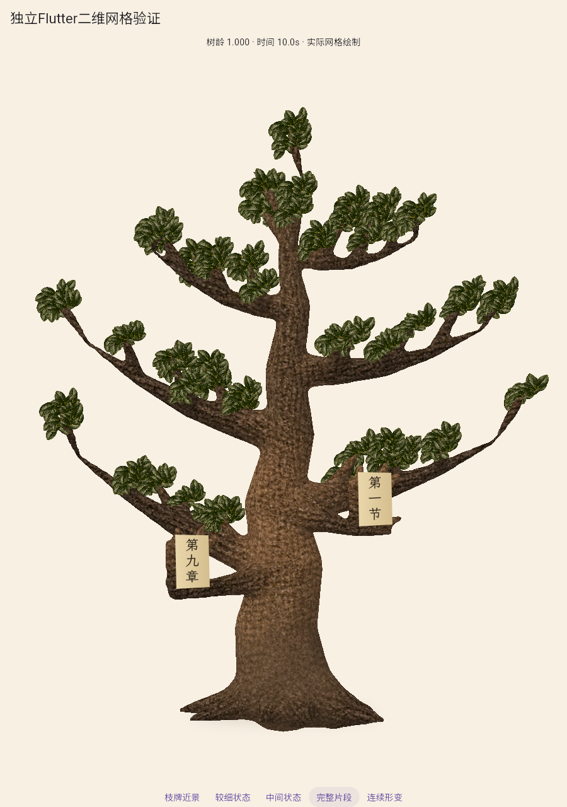
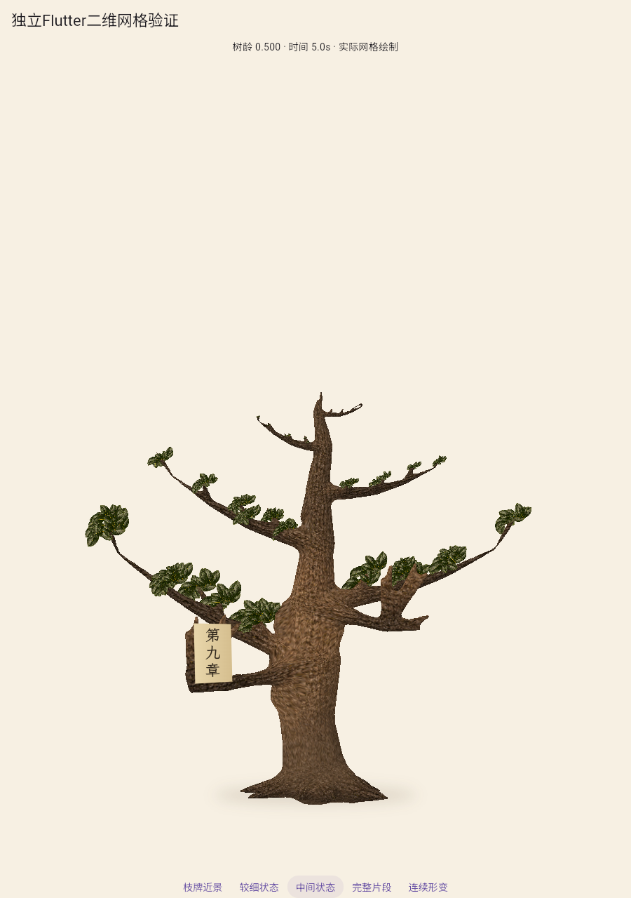
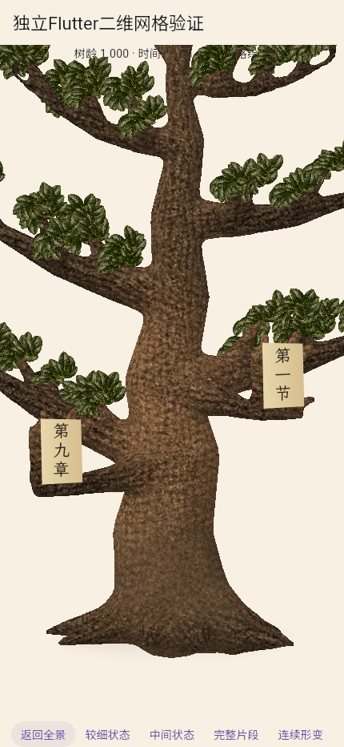
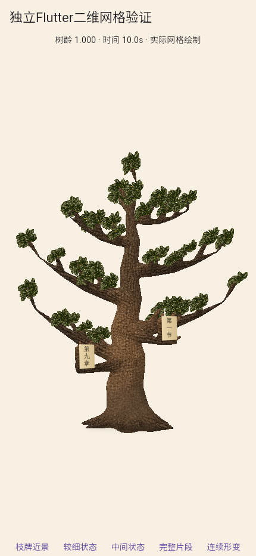

连通网格整树首轮：视觉拒绝
当前在五步计划第2步，未接入正式应用。宽冠、根颈、幼苗、材质、枝牌和近景构图均未通过。
以下是同一真实Flutter网格在不同树龄的绘制。不是阶段整树图切换。参考规定整体品质；坐标测试和程序零错误不代替视觉审查。
 参考：成熟树应有宽冠、体积与自然分叉。
参考：成熟树应有宽冠、体积与自然分叉。

首轮成熟：层层伸枝与叶球明显，视觉拒绝。
幼苗：比例失衡、裸尖，尚未形成可信完整树苗。

中龄：固定相机，叶冠与枝干关系待整体修正。

枝牌近景：文字已可读，框纸关系与顶部干扰未通过。

浏览器手机视口全景，不能当作实体手机验收。
连续成长短片
101个实际Flutter网格状态，固定相机，约10.1秒，编码10fps。视频编码帧率不代表运行帧率。
浏览器结果与源码哈希 · 独立几何结果 · 审查与第二轮出口